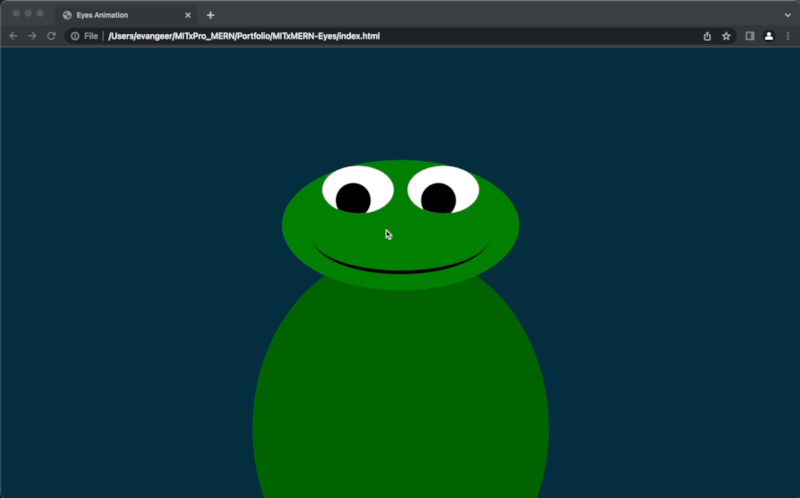

Summary
Simple project to demonstrate pulling together CSS, JS and html to simplify animation, while observing mouse movements.
Base Requirements
- Include two eyes that track the mouse
- Leverage CSS styling on div elements to create the eye shapes
- Use JS to animate the eyes
Add-on scope
- Mouth should open on hover
Sample Image

Usage
Pull repo and launch index.html
License
MIT License